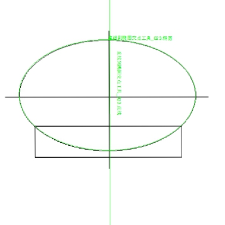
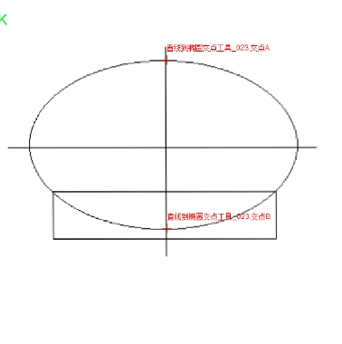

直线到椭圆交点工具主要用来计算输入图像中一条直线与椭圆之间的交点，并输出交点坐标。
 
| 分类 | 参数名称 | 参数描述 |
|---|---|---|
| 属性窗口 | 无 | |
| 图像窗口 | 输入图像 | 显示待检测的图像。 |
| 直线 | 将要求交点的直线。 | |
| 椭圆 | 将要求交点的椭圆。 | |
| 数据链 | 输入图像 | 输入图像宽度、高度、像素大小，同图像窗口的输入图像参数。 |
| 直线 | 将要求交点的直线。 | |
| 圆 | 将要求交点的圆。 | |
| 高级界面 | 无 | 无 |
| 分类 | 参数名称 | 参数描述 |
|---|---|---|
| 监视窗口 | 输入图像 | 输出图像宽度、高度、像素大小。 |
| 交点A | 直线与椭圆的第一个交点图像坐标。 | |
| 交点B | 直线与椭圆的第二个交点图像坐标。 | |
| 执行结果 | 工具执行结果。 | |
| 执行时间 | 工具执行时间。 | |
| 图像窗口 | 输入图像 | 显示工具执行结果图像，同监视窗口的输入图像参数。 |
| 交点A | 直线与椭圆的第一个交点。 | |
| 交点B | 直线与椭圆的第二个交点。 | |
| 执行结果 | 显示工具执行结果，执行成功显示“OK”，执行失败显示“NG”，同监视窗口的执行结果参数。 | |
| 数据链 | 输入图像 | 输出图像宽度、高度、像素大小，同监视窗口的输入图像参数。 |
| 交点A | 直线与椭圆的第一个交点图像坐标，供后序工具使用，同监视窗口的交点A参数。 | |
| 交点B | 直线与椭圆的第一个交点图像坐标，供后序工具使用，同监视窗口的交点B参数。 |
无
直线与椭圆无交点时，工具执行失败。
当数据链窗口中没有指定直线与椭圆参数来源时，直线与椭圆由图像窗口的直线与椭圆的GUI确定；当数据链窗口中已经指定直线与圆参数来源时，以该参数来源为优先，图像窗口直线与椭圆GUI确定的直线与椭圆无效。
如果直线与椭圆由图像窗口的直线与椭圆的GUI确定，则每次打开工程时需重新确定直线与椭圆。
数据链中的椭圆参数来源一般来自椭圆拟合工具。
参见“\Samples\形状间距及相关点.gvp”。